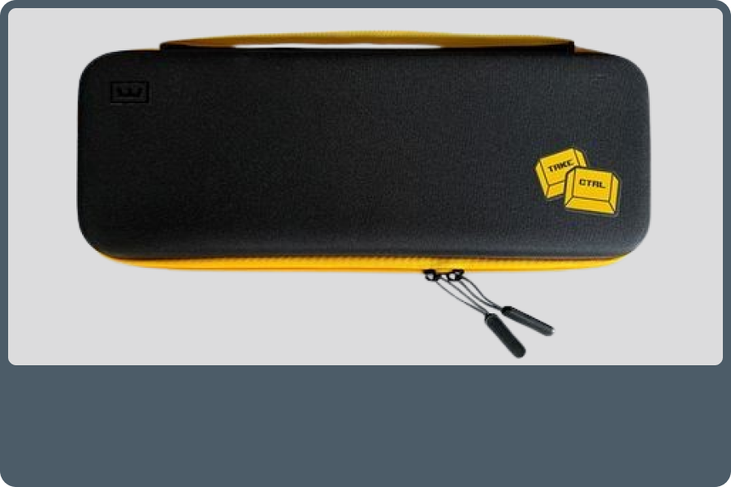

Wuuting Mobile Tasche 60
-
Die Wooting Reisetasche für 60 % Tastaturen. Nehmen Sie Ihren kleinen Freund überall hin mit, indem Sie
den Trageriemen der Tasche festhalten oder die schlanke Tasche in Ihren Rucksack schieben. Das Etui
schützt vor Beschädigung und Verschleiß auf Reisen. Wenn Sie sie öffnen, finden Sie zwei
Klettverschlüsse, die die Tastatur fest an ihrem Platz halten, und eine elastische Tasche für Kabel und
kleineres Zubehör.
-
Dies ist der perfekte Begleiter für Ihr Wooting 60HE.
-
28.99€
Kontakt